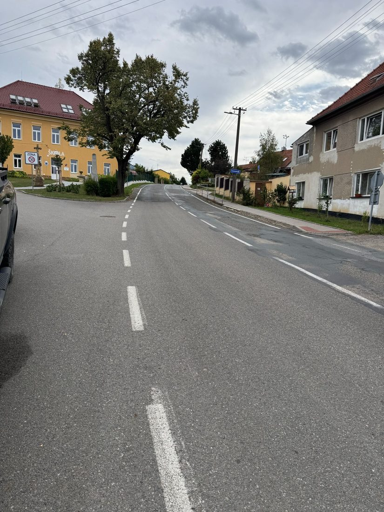
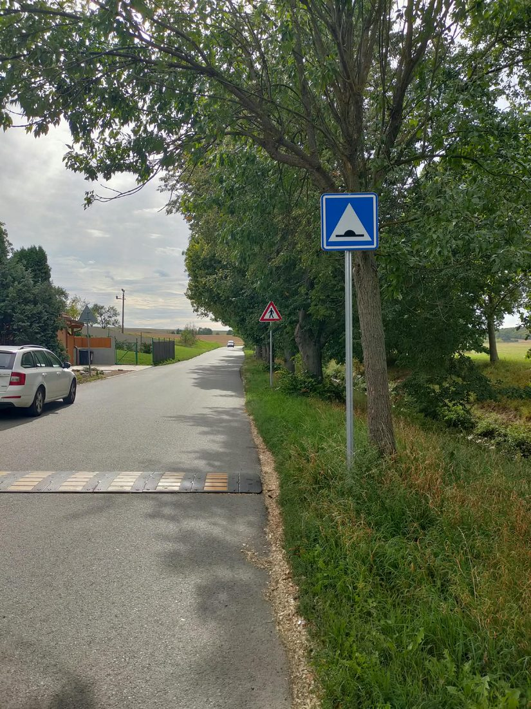
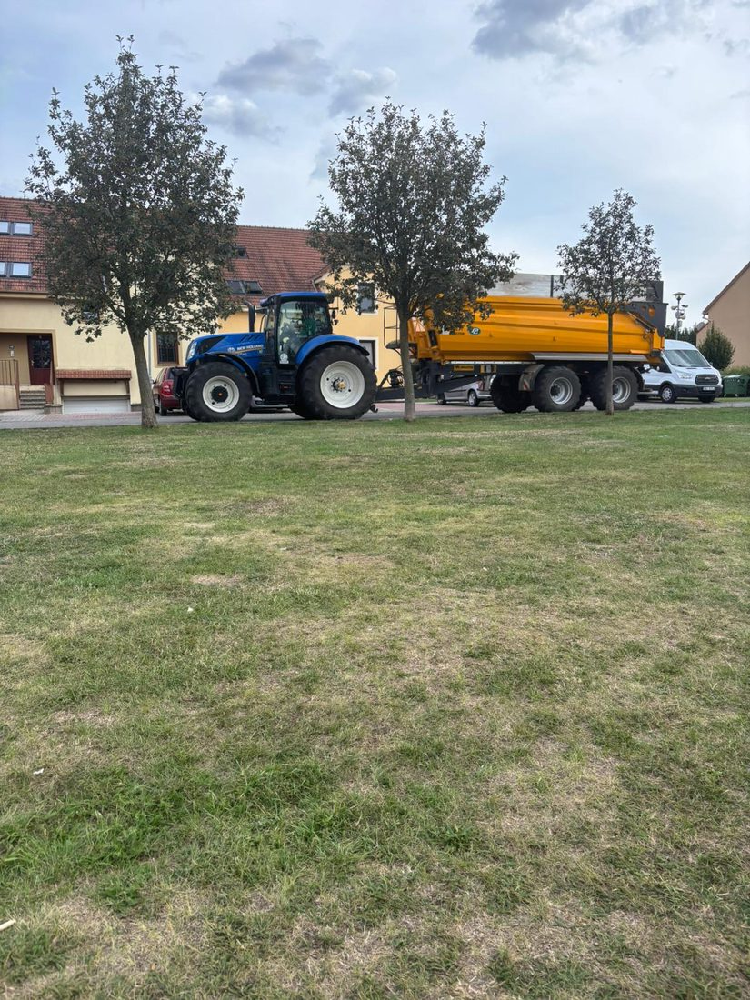
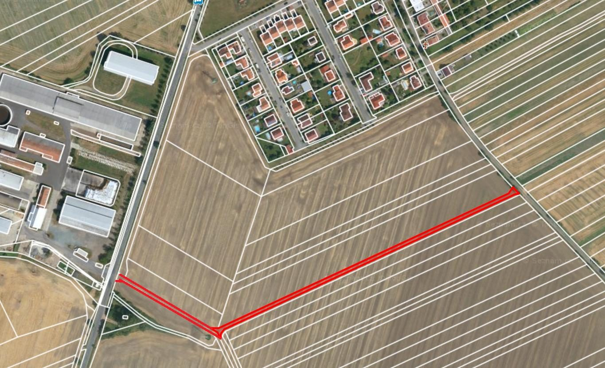
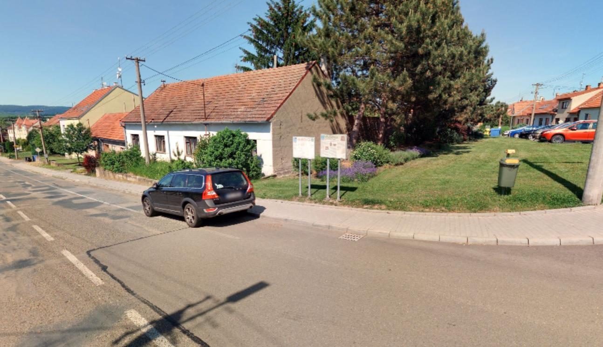
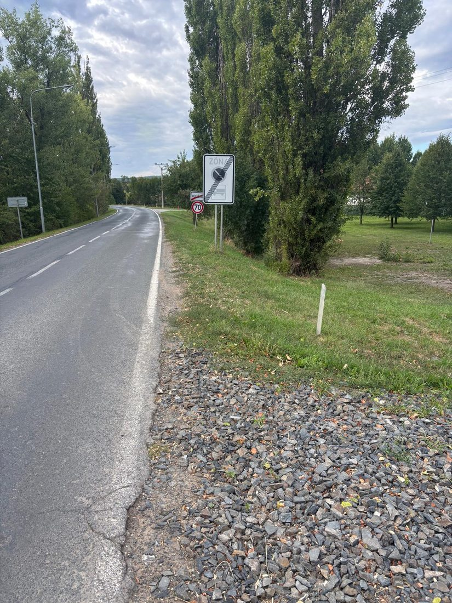
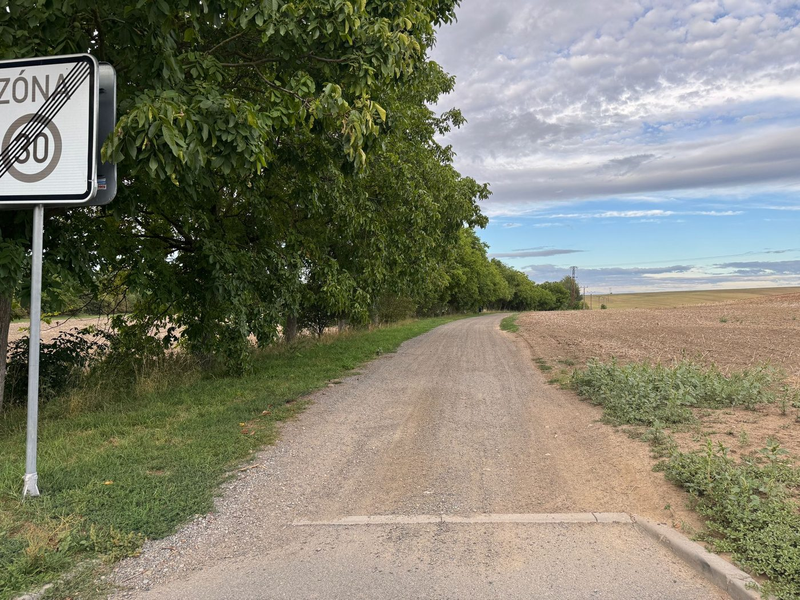

Program jsme rozdělili na investiční projekty, které vyžadují peníze a projektovou
přípravu, a na cíle, které nestojí téměř nic – jen ochotu pracovat jinak. U každého bodu říkáme
konkrétně, co uděláme.
Část první
Investiční a stavební cíle
1 Bezpečné Velešovice pro děti i seniory
Instalujeme rychlostní semafor v rizikovém úseku a prosadíme vybudování bezpečného přechodu
pro chodce na krajské silnici u školy. Obec musí být aktivním iniciátorem jednání s krajem a Policií ČR,
ne se vymlouvat, že silnice není obecní.

Krajská silnice u školy, kde chceme prosadit přechod pro chodce
2 Bezpečný Rakovec
Vypracujeme chybějící odbornou dokumentaci a revizi protipovodňových opatření jako základ
pro získání státních dotací na ochranu našich domovů.

Rakovec – místo, které potřebuje revizi protipovodňových opatření
3 Světlo do temných ulic
Bezpečná cesta na autobus. Okamžitě využijeme schválené finanční
prostředky z rozpočtu na instalaci chybějícího veřejného osvětlení podél frekventované
stezky kolem fotbalového hřiště k autobusové zastávce.
Doplnění osvětlení v obci. Doplníme chybějící lampy veřejného osvětlení
v rizikových a dosud neosvětlených částech obce s využitím úsporných LED technologií.
4 Odklon těžké techniky
Využijeme a zpevníme stávající zadní obecní cestu, abychom odlehčili obytné zóně a bytovkám
od hluku a prachu ze zemědělské dopravy. Zemědělci v obci pracovat musí – nemusí ale jezdit
lidem pod okny.

Obytnou zónou dnes projíždí těžká zemědělská technika

Zadní obecní cesta, kterou chceme zpevnit a využít pro odklon dopravy
5 Komunitní podporované bydlení pro seniory
Využijeme obecní pozemek a připravíme projekt výstavby komunitního podporovaného bydlení
o kapacitě 6–10 bezbariérových bytů. Financování zajistíme z velké části prostřednictvím
státních dotací.
Naším cílem je, aby naši starší spoluobčané nemuseli na stáří odcházet do cizích měst,
ale měli možnost zůstat v bezpečí a v blízkosti svých rodin v rodné obci.

Obecní pozemek určený pro komunitní podporované bydlení
6 Víceúčelový kulturní dům
Instalujeme ochranné sítě do oken a zregulujeme topení tak, aby sál mohl mimo kulturní akce
bezpečně sloužit pro sportovní aktivity místních spolků a dětí.
7 Sportoviště pro mladou generaci
Vybudujeme moderní pumptrack s využitím nezávadné výkopové zeminy z rekonstrukce kanalizace,
čímž ušetříme náklady na materiál. Realizaci podmíníme získáním externí dotace.
8 Bezpečné spojení pro každého – chodník k mlýnu
Obyvatelé u mlýna nesmí zůstat odříznutí a v nebezpečí. Spustíme projektovou přípravu
a majetkoprávní vypořádání pro výstavbu nového chodníku podél hlavní silnice směrem k mlýnu,
s financováním skrze státní dotace.

Úsek hlavní silnice k mlýnu, kde dnes chodník chybí
9 Na kole bezpečně do Slavkova a Rousínova
Obnovíme jednání se sousedními městy a podáme společný dotační projekt na výstavbu bezpečné
cyklostezky mimo hlavní silnice.

Polní cesta směrem na Slavíkovice – možná trasa cyklostezky
Část druhá
Otevřenost, komunita a plánování
Tyto změny nestojí obec téměř nic. Stačí k nim jen vůle pracovat otevřeně
a systematicky.
10 Otevřená obec pro každého
Vrátíme do ulic klasickou tištěnou úřední desku pro seniory, budeme bleskově zveřejňovat
kompletní zápisy z jednání zastupitelstva a zprovozníme aktivní, informativní profil obce
na sociálních sítích.
11 Transparentní podpora spolků
Zavedeme jasný a předvídatelný systém obecních dotací pro místní spolky s důrazem na práci
s dětmi a mládeží. Spolky jsou srdcem Velešovic.
12 Rozvoj obce s jasným plánem
Zpracujeme urbanistickou studii Velešovic, která určí jasná pravidla pro novou výstavbu,
ochranu zeleně a parkování, abychom si zachovali ráz klidné venkovské obce.
Zároveň chceme otevřít prostor pro rozumné bydlení našich dětí. Mladí lidé, kteří ve
Velešovicích vyrostli, dnes naráží na nedostatek příležitostí a odcházejí do Brna, Rousínova
nebo Slavkova. To je pro budoucnost naší komunity velká škoda.
13 Společný život ve Velešovicích
Obec bude partnerem, nikoliv brzdou kulturních a společenských akcí. Podpoříme tradiční hody,
sousedská setkání i nové komunitní akce napříč generacemi.
Poznámka na rovinu
U velkých investic – chodník k mlýnu, cyklostezka, bydlení pro seniory – jde o běh na dlouhou
trať kvůli pozemkům, schvalování s krajem a dotačním řízením. Neslibujeme, že budou hotové
za rok. Slibujeme, že se na nich začne pracovat hned.